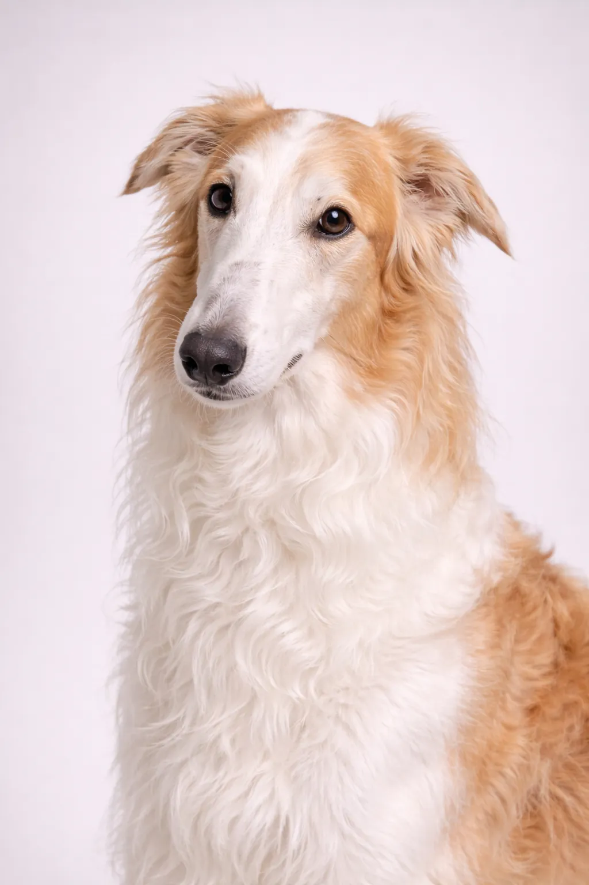

Barzoï
En tant que Chien Courant gracieux, calme, indépendant de Russia, le Barzoï a conquis de nombreux admirateurs dans le monde entier. Cette race de taille grand allie caractère et loyauté.
Évaluations de la Race
Tempérament
Aperçu
En tant que Chien Courant gracieux, calme, indépendant de Russia, le Barzoï a conquis de nombreux admirateurs dans le monde entier. Cette race de taille grand allie caractère et loyauté.
Tempérament
Le Barzoï est gracieux et calme. Cette race est connue pour son caractère équilibré et forme des liens forts avec sa famille. Avec une socialisation et un dressage appropriés, ils deviennent des compagnons loyaux et affectueux.
Santé
Le Barzoï a une espérance de vie de 9-14 ans. Comme beaucoup de races de cette taille, ils peuvent être sujets à dysplasie de la hanche et du coude, ballonnements et maladies cardiaques. Des visites vétérinaires régulières et une alimentation équilibrée sont importantes pour une vie longue et saine.
Exercice
Le Barzoï a besoin d'exercice modéré avec des promenades quotidiennes de 30-60 minutes. Le temps de jeu dans le jardin et les jeux interactifs gardent cette race heureuse et en bonne santé. Une activité régulière est importante pour le bien-être physique et mental.
⦿ Cette Race Est-Elle Faite Pour Vous ?
✓ Idéal Pour
- Foyers calmes
- Those wanting an elegant breed
- Experienced sighthound owners
✗ Pas Idéal Pour
- Foyers avec petits animaux
- Those wanting an obedient dog
Notre Verdict : Le Barzoï est un compagnon gracieux et calme pour la bonne famille. Avec des soins et un dressage appropriés, cette race devient un ami fidèle pour la vie.